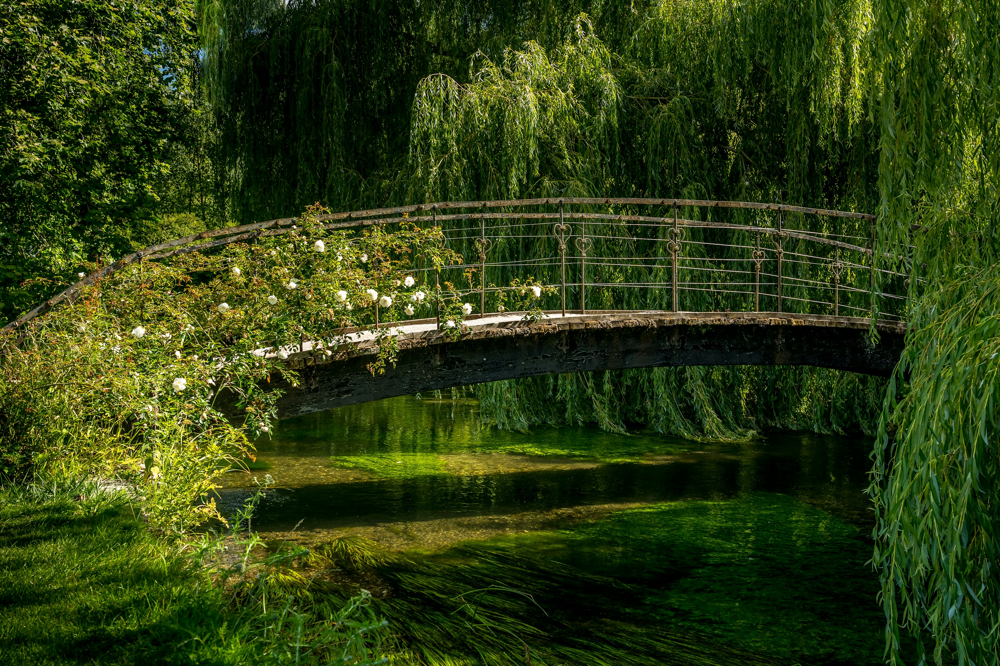
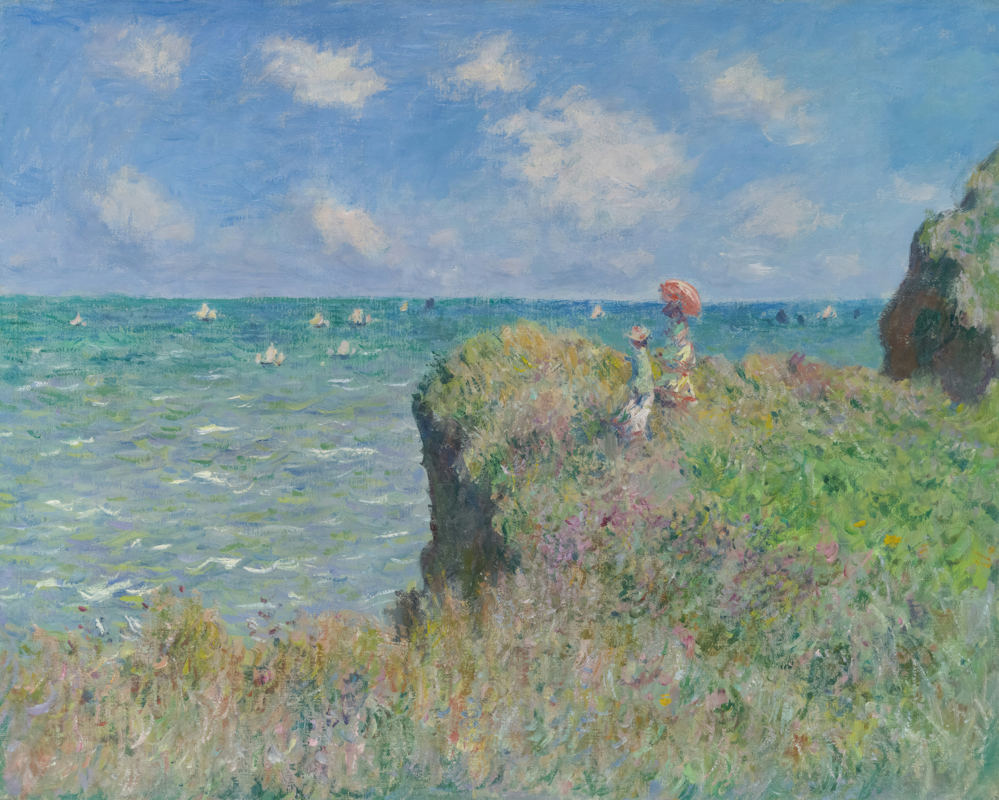
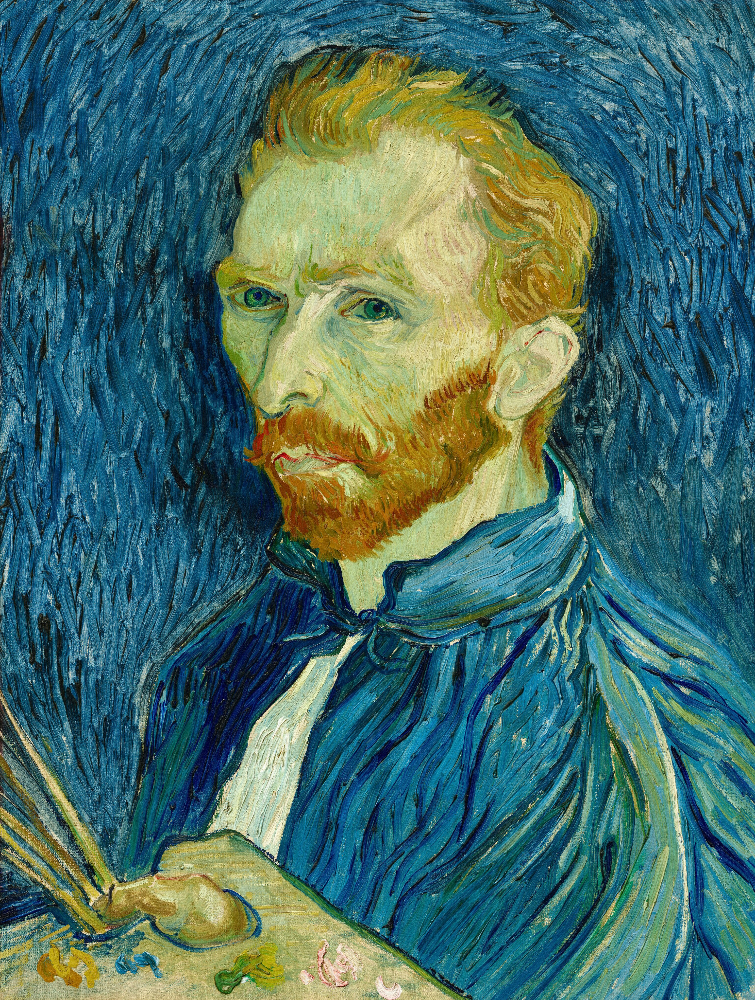
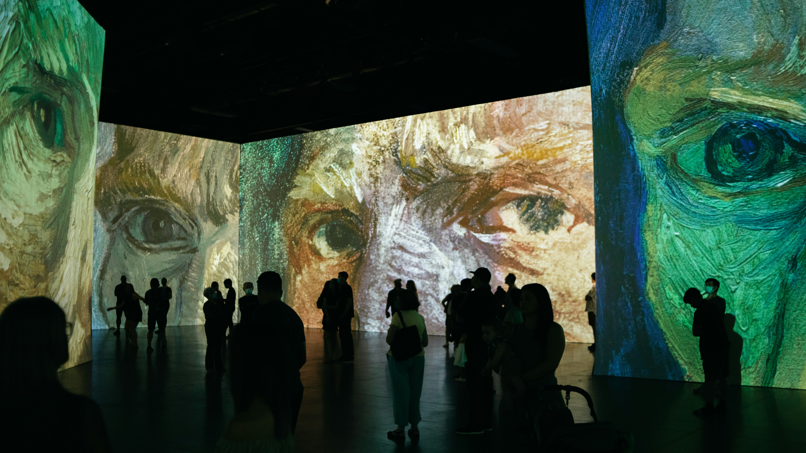
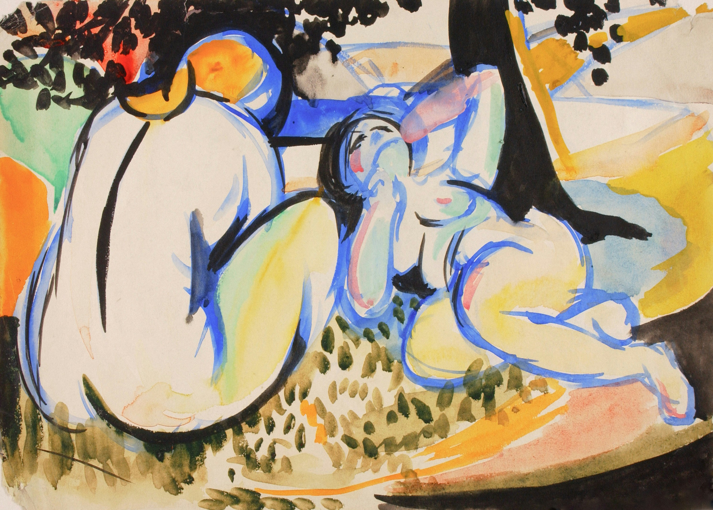
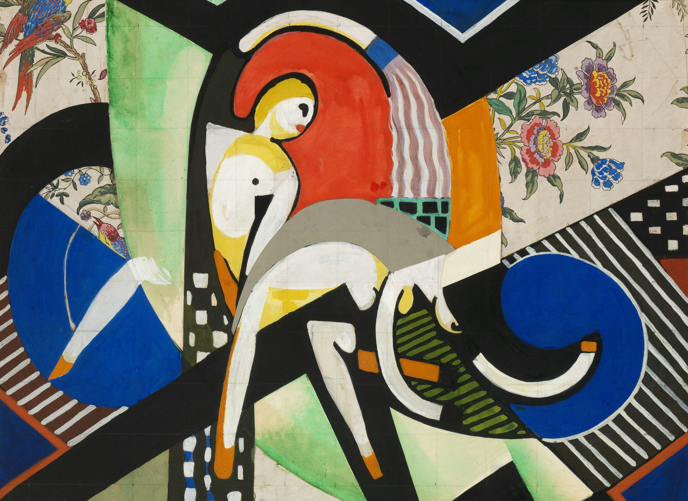

These are a few of my favourite artists.
I absolutely
adore this style of art, we went all over to meusums
to see art when I was little.
I wish I was able to afford that
for my children. One day I hope I will.





